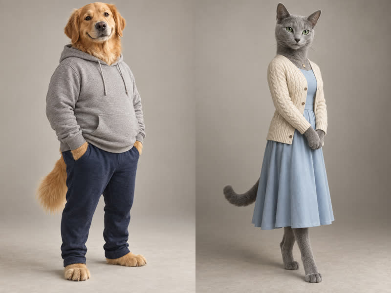

동물 부부 썰 — 1편 «각방인데 왜 왔어?»
강아지 남편 «보리» + 고양이 아내 «나비» · 17초 · 업로드 안 함(검토용)
줄거리
«오늘부터 각방이야!» → 3분 후, 베개 물고 문 앞에서 낑낑 → «…추워서.» → (혀 내밀고 헥헥) → «여름이야.»
봐 주실 점
- 동물 입 립싱크가 자연스러운지
- 낑낑·헥헥 컷의 소리(H3가 직접 만든 소리)
- 길이 17초 — 경쟁 채널 중앙 30초보다 짧음
- 조합(강아지+고양이)·이름·목소리
캐릭터

소재·대본: 3사 작가실(투표 1위 8.11점) · 영상: MiniMax H3(허브 공용 프롬프트 생성기 첫 실사용) · 목소리: ElevenLabs · 비용 약 $0.6